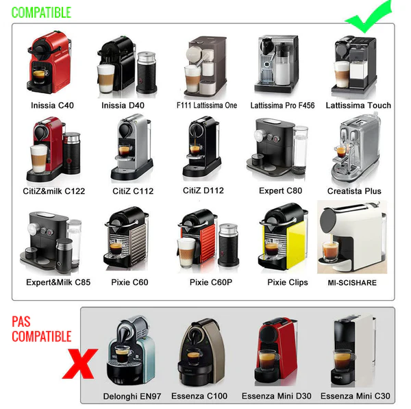

10 capsules
20 €
Pour tester le format capsule avec une routine simple et familière.
- 10 cafés en capsules
- Compatible avec certaines machines de type Nespresso Original*
Option capsules compatibles Nespresso
Pour celles qui utilisent déjà une machine à capsules, cette version permet de garder le même geste: une capsule le matin, avec un format découverte de 10 capsules.
Offres capsules
Les capsules sont pensées pour celles qui veulent un geste encore plus rapide: pas de dosage, pas de sachet, pas de nouvelle préparation.
Pour tester le format capsule avec une routine simple et familière.
Compatibilité machines
Ces capsules sont prévues pour les machines utilisant le format Nespresso Original. Elles ne sont pas destinées aux machines Vertuo.

Même promesse d’usage
Le format capsule n’est pas là pour changer le produit en complément alimentaire. C’est simplement une version plus pratique pour les personnes qui préparent déjà leur café ainsi.

Questions capsules
Même avec les capsules, le cadre reste le même: accompagner une démarche minceur, sans garantir de résultat individuel.
Non. Nespresso est une marque tierce. La mention sert uniquement à indiquer le type de machine compatible.
Une capsule par jour suffit pour suivre le rituel proposé. Évitez d’en prendre le soir si vous êtes sensible à la caféine.
Pour la simplicité. Le sachet est plus économique, la capsule est plus pratique.
Oui, l’objectif est de garder un goût familier et d’éviter l’effet boisson minceur artificielle.